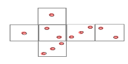
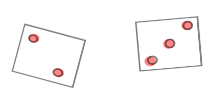
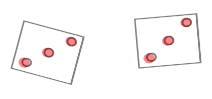
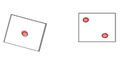

Chapter 1 Random events and probability
Probability theory describes random events such as:
- throwing a certain number when rolling the dice,
- having a positive return in a portfolio of stocks in fututre,
- future default of a borrower
- Online customer clicking or not on an ad
- …
Chapter goals
In this chapter we will learn how to:
- Model random events using probabilities
- Calculate and interpret different kinds of probabilites: marginal, joint, and conditional ones
- Use when appropriate the assumptions of independence and equal outcome probability
We use the following very simple example to recall the basics of randomness and probability.
Example 1.1 (rolling two dice with faces 1,2,3) We conduct the experiment: rolling two fair dice with the faces 1, 2 and 3 on two sides of each die.

Different outcomes are possible:



Since we do not know the outcome prior to conducting the action, it is a random process or a random experiment, which outcomes we observe at the end.1.1 Outcomes and Events
Normally when modelling a random process, we are interested in certain outcomes of interest, which can be numbers, or more complex objects. The outcome should be a complete description of the end state of a random process, in the sense that everything we are interested in can be defined in terms of the single outcome denoted as \(\omega\). All possible outcomes are gathered in the sample space \(\Omega.\)
Example 1.2 (Outcomes and Sample space in rolling the dice twice) Example @ref(exm: roll123) cont.
The outcomes of folling the dice with faces 1,2,3 can be defined as a pair of two numbers \((a,b)\) describing the faces shown as a result of the first (\(\color{red}a\)) and of the second (\(\color{blue}b\)) die: \[(\color{red}2,\color{blue}3); (\color{red}3,\color{blue}3); (\color{red}1,\color{blue}2); \ldots\]
Sample space (the collection of all possible outcomes): \[\begin{align*} \Omega &= \{(1;1), (1;2), (1;3), (2;1),\ldots, (3;3)\}\\ &=\{(a,b) | a,b\in \{1; 2; 3\}\}, \end{align*}\] where \(a=\text {result of the 1st throw}\) and \(b=\text {result of the 2nd throw}\)
The cardinality (the number of elements) of \(\Omega\) is: \(|\Omega| = \text{possibilities}^\text{number of repetitions} = 3^2=9.\)
Sometimes we are interested in a single outcome, but most of the time we favor outcomes with certain property. For example, if we play a board game, where you win if you get the same number twice (outcomes \((1,1); (2,2); (3;3)\)) or the sum of the faces is greater than four (outcomes \((2,3); (3,2); (3;3)\)). Therefore, we define events which are sets of outcomes that we are interested in. We can think of an event as either:
- A statement that is either true or false
- A subset of the sample space
These two concepts are equivalent, though the subset concept makes the math clearer.
Example 1.3 (Possible events in rolling the dice twice) Example @ref(exm: roll1232) cont.
Events:
- \(A=\)“The numbers on both dice are the same”; formally: \(A=\{(a,b)\in \Omega | a=b\} =\) \(\{(1;1), (2;2), (3;3)\}\)
- \(B=\)“The numbers on both dice are odd”; formally: \(B=\{(a,b)\in \Omega | a, b \text{ odd}\} =\) \(\{(1;1), (1;3), (3;1), (3;3)\}\)
- \(A\cup B=\)“The numbers on both dice are the same and /or the numbers are odd”; formally: \(A\cup B=\{(a,b)\in \Omega | a=b \text{ or } a,b \text{ odd }\} =\) \(\{(1;1), (1;3), (2;2), (3;1), ( 3;3)\}\)
\(A\cup B=\)“The same number on both dice and the numbers are odd”; formally: \(A\cup B=\{(a,b)\in \Omega | a=b \text{ or } a,b \text{ odd }\} =\) \(\{(1;1), ( 3;3)\}\)
\(C=\)“The sum of both dice numbers is four”; formally: \(C=\{(a,b)\in\Omega| a+b=4\} =\) \(\{(1,3); (2,2); (3,1)\}\)
Beside the set operations in example @ref(exm: roll1233), it is useful to state further possible relations between events, such as:
- A complement \(A^c\) of an event \(A\) contains all possible outcome from \(\Omega\) which are not contained in \(A.\)
- The complement of the event “The numbers on both dice are odd” is the event “At least one number is even”.
- The complements of the event “The numbers on both dice are the same” is the event “The numbers on both dice are different”
- Two events are disjoint (\(A\cap B=\emptyset\)) if they share no outcomes.
- The events “The numbers on both dice are odd” and “The numbers on both dice are even” are disjoint.
- An event \(A\) implies another event (\(A\subset B\)) if all of its outcomes are also in the implied event \(B.\)
- The event “The numbers on both dice are even” implies the event “The sum of both dice is four”.
All events for which a probability can be calculated are summarized in the event space \(\mathcal F\).
Formally \(\mathcal F\) is a set of subsets of \(\Omega\), i.e. a subset of the power set \(\mathcal P(\Omega)\).
For a finite and countable set of results, one usually chooses \(\mathcal F=\mathcal P(\Omega)\) (the set of all subsets), since this event space then contains all events that can be defined for the random experiment at hand.
1.2 Probabilities
Event probabilities quantify the uncertainty associated with the outcome of a random experiment. The probability measure assigns a number between \(0\) and \(1\) to each event.
For \(\omega\in\Omega\) the map is called \(\omega\mapsto\mathbb P(\omega)\) probability measure. For an event \(A\in \mathcal F\), the probability of \(A\) is equal to the sum of the probabilities for the outcomes contained in \(A\): \(\mathbb P(A) = \sum _{\omega \in A } \mathbb P(\omega)\).
Any probability measure must satisfy Kolmogorov’s axioms:
- \(\mathbb P(A)\geq 0\),
- \(\mathbb P(\Omega )=1\),
- If \(A\cap B=\emptyset\), then \(\mathbb P(A\cup B)=\mathbb P(A)+\mathbb P(B)\).
Laplace’s probability model
With \((\Omega, \mathcal F,\mathbb P)\) there is a Laplace model if the following conditions are met:
The result set \(\Omega\) is finite and all results are equally probable.
The power set \(\mathcal P(\Omega)\) is chosen as the event space, i.e. every subset \(A\subseteq \Omega\) is an event.
The probability of an event \(A\in \mathcal F\) is then calculated by \[\begin{equation*} \mathbb P(A) = \frac{|A|}{|\Omega|} = \frac{\text{Number of outcomes favorable for $A$ to occur}} {\text{Number of all possible outcomes}} \end{equation*}\]
Example 1.4 (roll the dice twice) Continuation of ?? and ??.
In this experiment, the sample space is finite, the outcomes are equally likely and we have chosen the power set of \(\Omega\) as the event space. Consequently, Laplace’s probability model can be applied here.
\[\begin{align} \mathbb P(A) &= \frac{|A|}{|\Omega|}=\frac 39 = \frac 13,\\ \mathbb P(B) &= \frac{|B|}{|\Omega|}=\frac 49. \end{align}\]
Finite probability spaces
The triple \((\Omega,\mathcal F,\mathbb P)\) is a finite probability space if the following conditions are met:
The result set \(\Omega\) is finite.
The power set \(\mathcal P(\Omega)\) is chosen as the event field.
The individual probabilities \(\mathbb P(\omega)\) of all results \(\omega\in\Omega\) are non-negative and add up \(1\).
The probability of an event \(A\subseteq \Omega\) is then calculated by \[\begin{equation*} \mathbb P(A) = \sum _{\omega\in A} \mathbb P(\omega) = \text{Sum of all function values} \mathbb P(\omega)\text{ with } \omega\in A. \end{equation*}\] If \(\mathbb P(\omega)=\displaystyle\frac{1}{N}\) for all \(\omega\in\Omega=\{\omega_1, \ldots, \omega_N\}\), this is the special case of a Laplace model.
Example 1.5 (Sum of the dice numbers) Continuation of 1.1 and 1.4.
If we are now interested in their sum instead of the numbers, the new probability space is:
- \(\Omega = \{2;3;4;5;6\}\),
- \(\mathcal F=\mathcal P(\Omega)\): we still choose the power set as the event space,
- \(\mathbb P\):
\[ \begin{array}{c|ccccc}\omega_i&2&3&4&5&6\\\hline \mathbb P(\{\omega_i\})&\frac 19&\frac 29&\frac 39&\frac 29&\frac 19 \end{array} \]
In this new experiment, the result set is still finite and the event space is the power set of \(\Omega\). Still, the results are not equally likely. Consequently, the general finite probability space applies here.
For the events \(S_{>4}: \text{the sum of the numbers is greater than 4}\) and \(S_{even}: \text{the sum of the numbers is even}\) applies:
\[\begin{align} \mathbb P(S_{>4}) &= \mathbb P(\{5\}) + \mathbb P(\{6\}) = \frac 13,\\ \mathbb P(S_{even}) &= \mathbb P(\{2\}) + \mathbb P(\{4\}) + \mathbb P(\{6\})=\frac 59. \end{align}\]
1.2.1 Calculating with probabilities
The following properties of \(\mathbb P\) hold in general models and facilitate the calculation of probabilities for complex events:
\(\mathbb P(\emptyset)=0\)
\(A\subseteq B\) \(\Rightarrow\) \(\mathbb P(A)\leq \mathbb P(B)\) and \(\mathbb P(B\setminus A)= \mathbb P(B)-\mathbb P( A)\)
\(\mathbb P(A^c) = 1-\mathbb P(A)\)
\(\mathbb P(A\cup B) = \mathbb P(A) + \mathbb P(B) - \mathbb P(A\cap B)\)
\(\mathbb P(A\cap B) = \mathbb P(A)\cdot\mathbb P(B),\) for independent events \(A\) and \(B\).
Example 1.6 (Sum of the numbers) Continuation of 1.5.
- \(\Omega = \{2;3;4;5;6\}\),
- \(\mathcal F=\mathcal P(\Omega)\): we still choose the power set as the event space,
- \(\mathbb P\):
\[ \begin{array}{c|ccccc}\omega_i&2&3&4&5&6\\\hline \mathbb P(\{\omega_i\})&\frac 19&\frac 29&\frac 39&\frac 29&\frac 19 \end{array} \] The following applies: \(S_{>4}: \text{the sum of the numbers is greater than 4}\) with \(\mathbb P(S_{>4}) =\frac 13\), \(S_{even}: \text{the The sum of the numbers is even}\) with \(\mathbb P(S_{even}) =\frac 59.\)
For \(S_{>2}:\text{the sum of the numbers is greater than 2}\) applies:
- \(S_{>2}^c=\text{the sum of the numbers is less than or equal to 2}=\{2\}\) \(\leadsto\) \(\mathbb P(S_{>2}^c)=\mathbb P(\{2\})=\frac 19\). Then \(\mathbb P(S_{>2})=1-\mathbb P(S_{>2}^c) = \frac 89.\)
- since \(S_{>4}\subset S_{>2}\) \(\leadsto\) \(\mathbb P(S_{>2}\setminus S_{>4})=\mathbb P(S_{>2}) - \mathbb P(S_{>4}) =\frac 59,\) where \(S_{>2}\setminus S_{>4} = S_{>2}\cap S_{>4}^c =\) \(\text {the sum of the numbers is greater than 2 but not greater than 4}.\)
For \(S_{>4}\cap S_{even}: \text{the sum of the numbers is greater than 4 and even}\) applies:
- \(\mathbb P(S_{>4}\cap S_{even}) = \mathbb P(\{6\}) = \frac 19.\)
For \(S_{>4}\cup S_{even}: \text{the sum of the numbers is greater than 4 or even}\) applies:
- \(\mathbb P(S_{>4}\cup S_{even}) = \mathbb P(S_{>4}) + \mathbb P(S_{even}) - \mathbb P(S_{>4}\cap S_{even}) = \frac 13 + \frac 59 - \frac 19 = \frac 79.\)
1.2.2 Joint and conditional probabilities, independence of events
1.2.2.1 Joint probabilities
The joint probability of two events \(A\) and \(B\) is the probability that both happen:
\[\mathbb P(A\cap B).\]
Example 1.7 (Joint probabilities for two dice) Continuation of 1.4 and 1.5.
Consider the events:
- \(S_4=\)“The sum of the dice numbers is four”
- \(B=\)“The dice numbers are both odd”
\[\mathbb P(S_4\cap B) = \mathbb P(\{(1,3); (3,1)\}) = \frac 29.\]
Joint probabilities are just probabilities, so they obey all of the axioms and rules of probability.
1.2.2.2 Conditional probabilities
The conditional probability of an event \(A\) given another event \(B\) is defined as:
\[\mathbb P(A|B) = \frac{\mathbb P(A\cap B)}{\mathbb P(B)} = \frac{joint~probability}{probability~of~the~given~event}.\]
The conditional probability answers the question: if we already know that \(B\) is true, what are the chances that \(A\) is true?
Example 1.8 (Conditional probabilities for two dice) Continuation of 1.7.
Consider the events:
- \(S_4=\)“The sum of the dice numbers is four”
- \(B=\)“The dice numbers are both odd”
\[\mathbb P(S_4|B) = \frac{\mathbb P(S_4\cap B)}{\mathbb P(B)} = \frac{\frac 29}{\frac 49} = \frac 12.\]
1.2.2.3 Independence of events
If we assume that certain events are unrelated to each other, we say that the two events
are independent. Formally, \(A\) and \(B\) are independend, if their joint probability is just the two individual probabilities multiplied together:
\[\mathbb P(A\cap B) = \mathbb P(A)\cdot \mathbb P(B).\]
This definition is based in the premise, that the conditional probability corresponds to the simple probability, if the two events are unrelated:
\[\begin{align}\mathbb P(A|B) &= \mathbb P(A)\Leftrightarrow\\ \frac{\mathbb P(A\cap B)}{\mathbb P(B)} &= \mathbb P(A)\Leftrightarrow\\ \mathbb P(A\cap B) &= \mathbb P(A)\cdot {\mathbb P(B)} \end{align}\]
Example 1.9 (roll the dice twice) Continuation of 1.8.
In the experiment: rolling two fair dice, the defined events \(S_4\) and \(B\) are dependent, since:
\[\begin{align} \mathbb P(S_4\cap B) &=\frac 29\not = \frac 13\cdot\frac 49. \end{align}\]
So, \(S_4\) and \(B\) are dependent. The same can be deduced from \(\mathbb P(S_4|B)=\frac 12\not=\frac 13=\mathbb P(S_4)\).